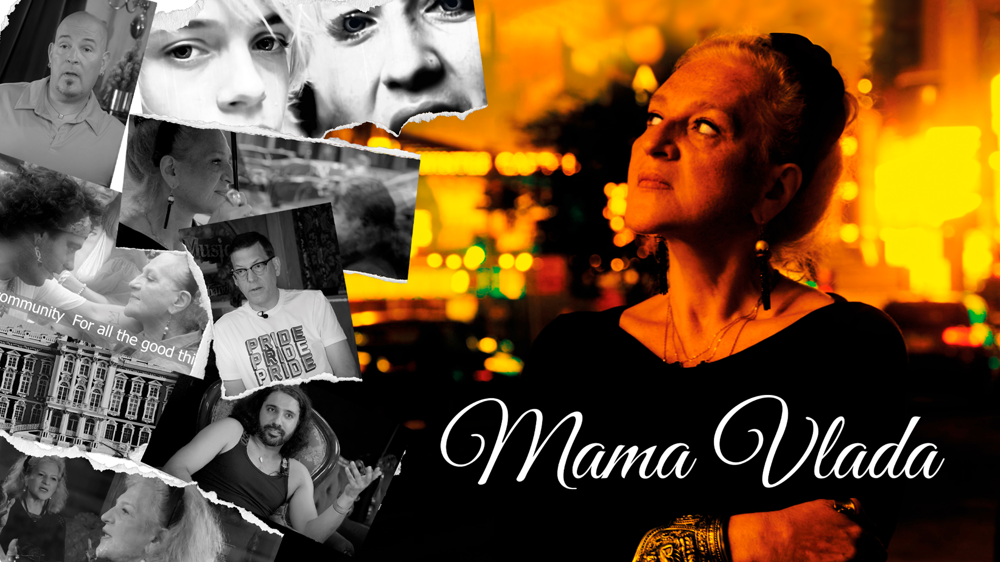

Silver Telly Award
Official Selection
Mama Vlada
An acclaimed feature documentary examining human rights, community resilience, and LGBTQ+ advocacy through the lens of Manhattan’s cultural institution Russian Samovar and its matriarch Vlada Von Shats.